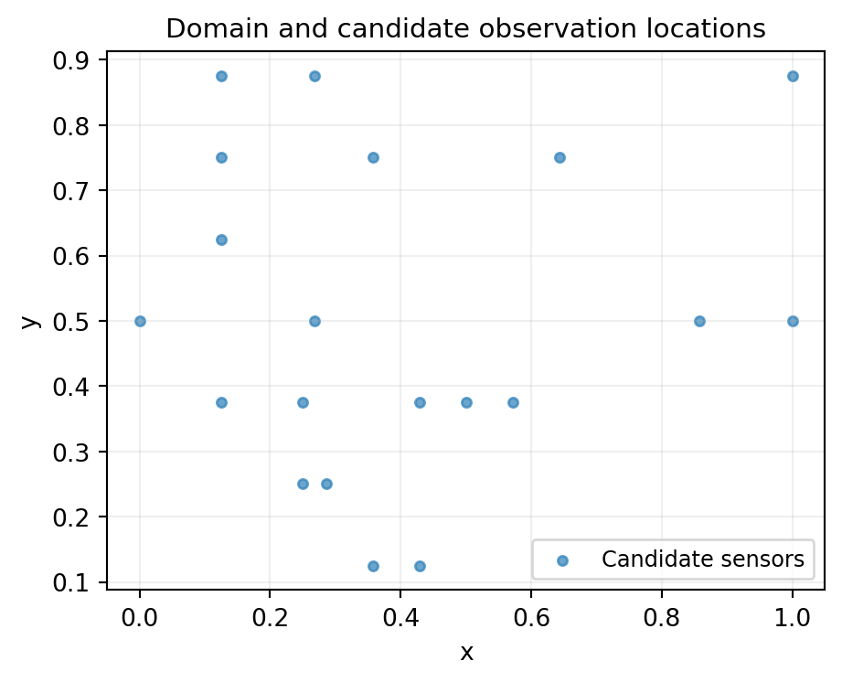
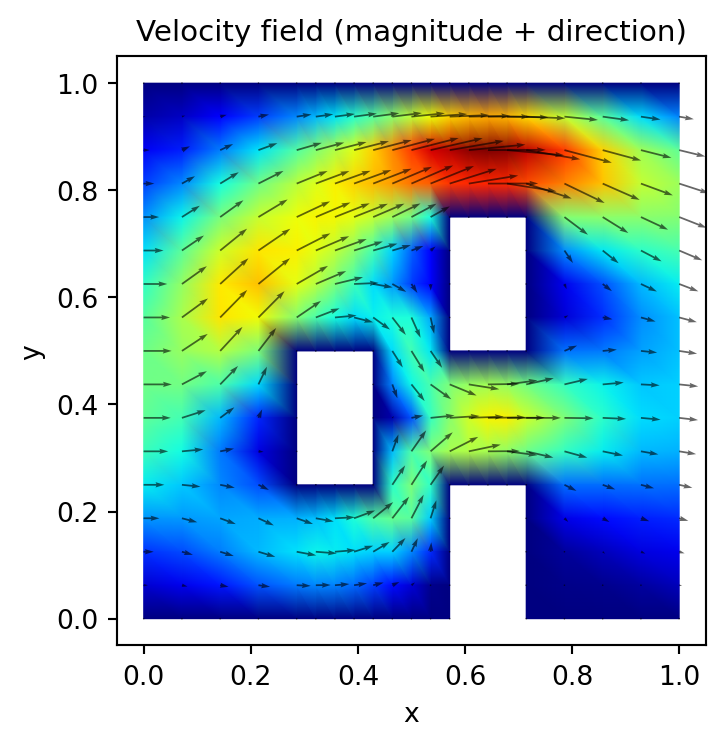
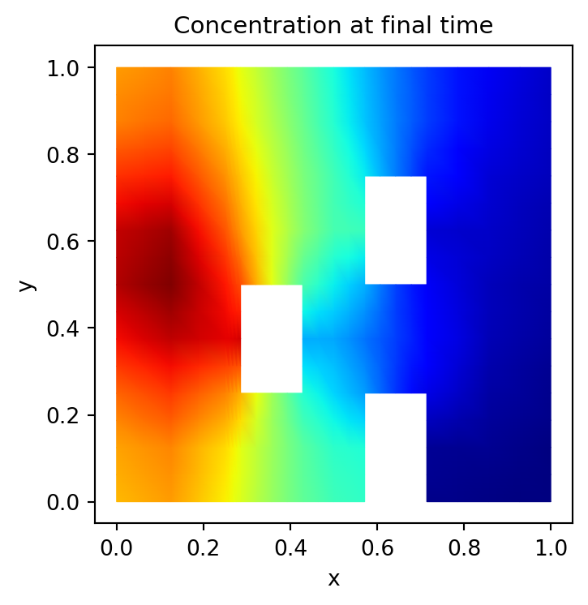
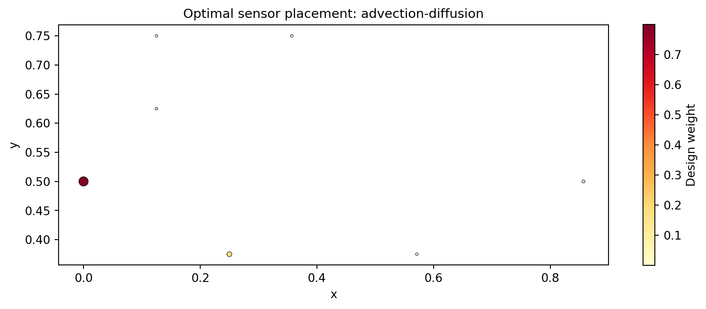

import os
import numpy as np
import matplotlib.pyplot as plt
from pyapprox.util.backends.numpy import NumpyBkd
from pyapprox_benchmarks.expdesign.advection_diffusion import (
build_obstructed_advection_diffusion_oed_problem,
)
from pyapprox.expdesign.data import OEDDataGenerator, OEDDataManager
from pyapprox.expdesign import (
GaussianOEDInnerLoopLikelihood,
StandardDeviationMeasure,
SampleAverageMean,
create_prediction_oed_objective,
RelaxedOEDSolver,
RelaxedOEDConfig,
solve_prediction_oed,
)
np.random.seed(1)
bkd = NumpyBkd()Decoupling Data Generation from OED Optimisation
PyApprox Tutorial Library
Generating, saving, and reusing expensive model evaluations so that OED optimisation can be run many times without re-running the forward model.
TipDownload Notebook
Learning Objectives
After completing this tutorial, you will be able to:
- Explain why separating data generation from OED optimisation reduces total cost
- Use
OEDDataGeneratorto produce outer- and inner-loop quadrature datasets - Save a dataset with
OEDDataManagerand reload it for a subsequent OED run - Extract a spatial subset of candidate observations without rerunning the model
Prerequisites
Complete Goal-Oriented OED: Predator-Prey. This tutorial introduces a new problem — an advection-diffusion PDE — but the OED workflow is the same.
Why Decouple?
For ODE models (Lotka-Volterra), evaluating the forward model is cheap: milliseconds per sample. For PDE models, a single evaluation can take seconds to minutes. The double-loop OED estimator requires \(M + N\) model evaluations per utility computation, and optimisation may call the utility hundreds of times.
Decoupling solves this by running the model exactly once, saving all evaluations to disk, then running the optimiser against the saved arrays. Because the inner/outer loop data does not depend on the design weights \(\mathbf{w}\) (only the likelihood evaluation does), this is always valid.
A second benefit: the same saved dataset can be used to compare multiple utility functions, test different observation subsets, or re-run with tighter optimiser tolerances — all without touching the forward model.
The Benchmark: Obstructed Advection-Diffusion
# Use lower mesh refinement for the tutorial (nrefine=2 instead of default 3).
# Production runs should use nrefine=3 or higher.
problem = build_obstructed_advection_diffusion_oed_problem(
bkd, nstokes_refine=1, nadvec_diff_refine=1,
)
obs_model = problem.obs_map() # FEM-based PDE solver
pred_model = problem.qoi_map()
prior = problem.prior()The problem models transport of a tracer through a 2-D channel with obstacles. The uncertain parameters control the inflow profile; observations are tracer concentrations at sensor locations; predictions are downstream concentrations at unobserved locations.

Visualizing the Physics
Before diving into the OED workflow, it helps to see what the forward model actually produces. We draw a single sample from the prior and solve both the Stokes (velocity) and advection-diffusion (concentration) equations. Both plots use the same parameter realization so the velocity field is the one that drives the tracer transport shown in the concentration plot.
# Draw one sample from the prior and solve both Stokes and ADR
sample = prior.rvs(1)
plot_data = problem.solve_for_plotting(sample)

Phase 1: Generate and Save the Dataset
# ------------------------------------------------------------------
# Configure sample sizes. For production, use 10_000 / 10_000.
# These small values are used only so this tutorial runs in CI.
# ------------------------------------------------------------------
nout = 5 # outer loop samples (use 10_000 in practice)
nin = 5 # inner loop samples (use 10_000 in practice)
quad_type = "Halton" # Halton gives better convergence than MC for smooth integrands
data_gen = OEDDataGenerator(bkd)
# Outer loop needs samples from the joint (theta, epsilon) distribution
noise_std = 1.0
nobs_total = problem.nobservations()
noise_cov_diag = bkd.full((nobs_total,), noise_std**2)
joint_variable = data_gen.joint_prior_noise_variable(prior, noise_cov_diag)
outerloop_samples, outerloop_weights = data_gen.setup_quadrature_data(
quadrature_type=quad_type,
variable=joint_variable,
nsamples=nout,
loop="outer",
)
# Inner loop needs only prior samples
innerloop_samples, innerloop_weights = data_gen.setup_quadrature_data(
quadrature_type=quad_type,
variable=prior,
nsamples=nin,
loop="inner",
)
nqoi = pred_model.nqoi()
qoi_quad_weights = bkd.full((nqoi, 1), 1.0 / nqoi)Now we run the forward model — the expensive step — and save everything.
data_dir = "data"
os.makedirs(data_dir, exist_ok=True)
filename = os.path.join(
data_dir,
f"advec_diff_oed_n{nout}_m{nin}_{quad_type}.pkl"
)
data_manager = OEDDataManager(bkd)
nparams = prior.nvars()
if not os.path.exists(filename):
print(f"Running forward model and saving to {filename} ...")
# Evaluate models at the sampled parameter values
outer_theta_samples = outerloop_samples[:nparams, :] # strip noise columns
outerloop_shapes = obs_model(outer_theta_samples) # (nobs_total, nout)
# Solve once per inner sample to get both obs and pred quantities
innerloop_shapes, qoi_vals_raw = problem.evaluate_both(innerloop_samples)
qoi_vals = qoi_vals_raw.T # (nin, nqoi)
data_manager.save_data(
filename,
outerloop_samples,
outerloop_shapes,
outerloop_weights,
problem.design_conditions(),
innerloop_samples,
innerloop_shapes,
innerloop_weights,
qoi_vals,
qoi_quad_weights,
)
print("Saved.")
else:
print(f"Dataset already exists at {filename} — skipping model evaluation.")Running forward model and saving to data/advec_diff_oed_n5_m5_Halton.pkl ...
Saved.Phase 2: Load and Run OED
In a separate session (or in the same session after the generate phase), load the dataset and run the optimiser — no forward model calls needed.
# ---- Load ----
data_manager.load_data(filename)Selecting a Spatial Subset
The saved dataset covers all nobs_total sensor locations. For the OED we may want to use only a spatial subset — for example, every third location.
# Select a subset of observations (every third sensor location)
active_obs_idx = bkd.arange(data_manager.nobservations())[::3]
active_loc_idx = active_obs_idx # same indices into location array
# nout_oed / nin_oed can be smaller than the saved dataset (useful for quick tests)
nout_oed = min(4, nout)
nin_oed = min(4, nin)
oed_data = data_manager.extract_data_subset(
active_obs_idx, active_loc_idx, nout_oed, nin_oed
)
Note
extract_data_subset is free
Subsetting re-indexes array slices; it never touches the forward model. You can call it many times with different nobs, nout_oed, nin_oed combinations to explore the cost-accuracy tradeoff before committing to a full run.
Run the Optimiser
nobs_oed = int(bkd.to_numpy(active_obs_idx).shape[0])
noise_variances = bkd.full((nobs_oed,), noise_std**2)
# Extract pre-computed arrays
out_shapes = oed_data["outloop_shapes"]
in_shapes = oed_data["inloop_shapes"]
out_samples = oed_data["outloop_samples"]
in_weights = oed_data["inloop_quad_weights"]
out_weights = oed_data["outloop_quad_weights"]
qoi_vals_sub = oed_data["qoi_vals"]
# Generate latent noise samples: use the active observation indices
# into the noise portion of the outer loop samples
noise_indices = nparams + bkd.to_numpy(active_obs_idx).astype(int)
latent_samples = out_samples[noise_indices, :]
# Solve using the convenience function
design_weights, utility = solve_prediction_oed(
noise_variances=noise_variances,
outer_shapes=out_shapes,
inner_shapes=in_shapes,
latent_samples=latent_samples,
qoi_vals=qoi_vals_sub,
bkd=bkd,
deviation_type="stdev",
risk_type="mean",
config=RelaxedOEDConfig(maxiter=200, verbosity=0),
)Visualise the Design
from pyapprox_tutorials.figures import plot_advec_diff_design
fig, ax = plt.subplots(figsize=(9, 4))
obs_locs = bkd.to_numpy(oed_data["design_conditions"])
w = bkd.to_numpy(design_weights[:, 0])
plot_advec_diff_design(ax, obs_locs, w)
plt.tight_layout()
plt.show()
Key Takeaways
- The data-generation and optimisation phases are fully decoupled. Save once, optimise many times.
OEDDataManager.extract_data_subsetlets you explore different observation subsets and sample sizes at negligible cost.- Halton quadrature typically outperforms MC for the smooth Gaussian integrands in OED, especially for moderate sample counts.
- The same saved dataset can be used with any deviation measure or risk statistic, making systematic comparison cheap.
Exercises
Load the same dataset and run the OED with
deviation_type="entropic"instead of"stdev". Do the high-weight sensor locations shift?Call
extract_data_subsetthree times withnout_oed = 5, 7, 9. Plot the objective value as a function ofnout_oed. At what point does it stop changing meaningfully?Compare the design obtained with
quad_type = "Halton"vs."MC"for the same total number of samples. Is there a visible difference in the weight distribution?